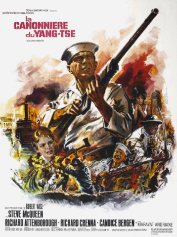

Publié le 18/10/2026

Chine, 1926. Le matelot mécanicien Jake Holeman vient d'être affecté sur le «San Pablo», une vieille canonnière américaine dont la mission est d'impressionner les Chinois. Le San-Pablo remonte le Yang-Tsé-Kiang en s'efforçant de rester neutre dans le conflit qui oppose l'armée nationaliste aux communistes. La vie à bord est agréable, chaque marin bénéficiant des services de nombreux domestiques chinois. Mais la révolution est en marche et le commandant du «San Pablo» décide de remonter le fleuve pour secourir des missionnaires assiégés par les révolutionnaires.
Film américain de 1966
Titre original : "The Sand Pebbles"
Genre : guerre
Durée : 03h02
Réalisateur : Robert Wise
Acteurs principaux :
Steve McQUEEN - Richard ATTENBOROUGH - Richard CRENNA - Candice BERGEN
Les commentaires sont soumis à modération et doivent être approuvés avant publication.